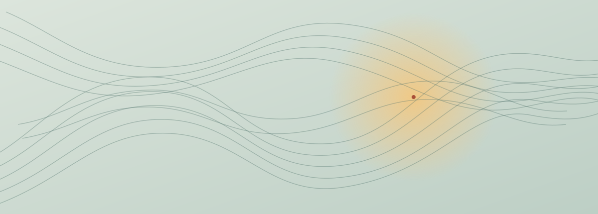

THE ART OF KEEPING THINGS WORKING
Designing for
resilience
Good systems do not avoid every surprise. They make room for people to understand one, respond well, and keep going.

Resilience is often mistaken for toughness. But the systems that endure are rarely the ones that never move. They are the ones built with enough slack to move safely.
That distinction changes the questions we ask. Instead of “How do we prevent every failure?” we can ask “When a component fails, how quickly can the rest of the system make the failure legible?”
01 — HOLD TWO IDEAS AT ONCE
Three useful tensions
Fast, not rushed
Make the safe path the easy path, and keep space for deliberate decisions.
Simple, not simplistic
Prefer a few clear boundaries over a single boundary that hides every trade-off.
Automated, still human
Let machines handle repetition. Let people handle context, judgment, and care.
“The point is not to make change harmless. It is to make the consequences understandable.”— A principle from the incident review room
02 — BUILD THE MUSCLE
Practice over prediction
Teams become resilient by rehearsing the handoffs that matter: how to slow a rollout, how to see the blast radius, and how to restore a known-good state without waiting for a perfect diagnosis.
03 — LEAVE A TRACE
A note to the next team
Every system is eventually inherited by someone who was not in the room when it was designed. Give them a map, the reason behind one important choice, and a way to ask for help.